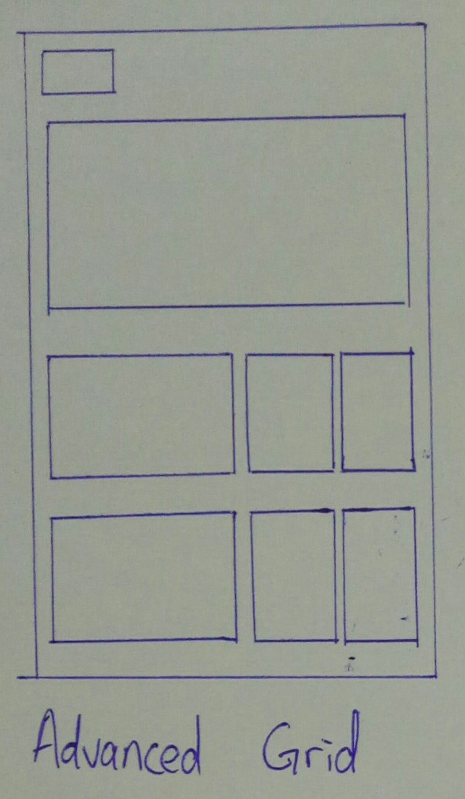
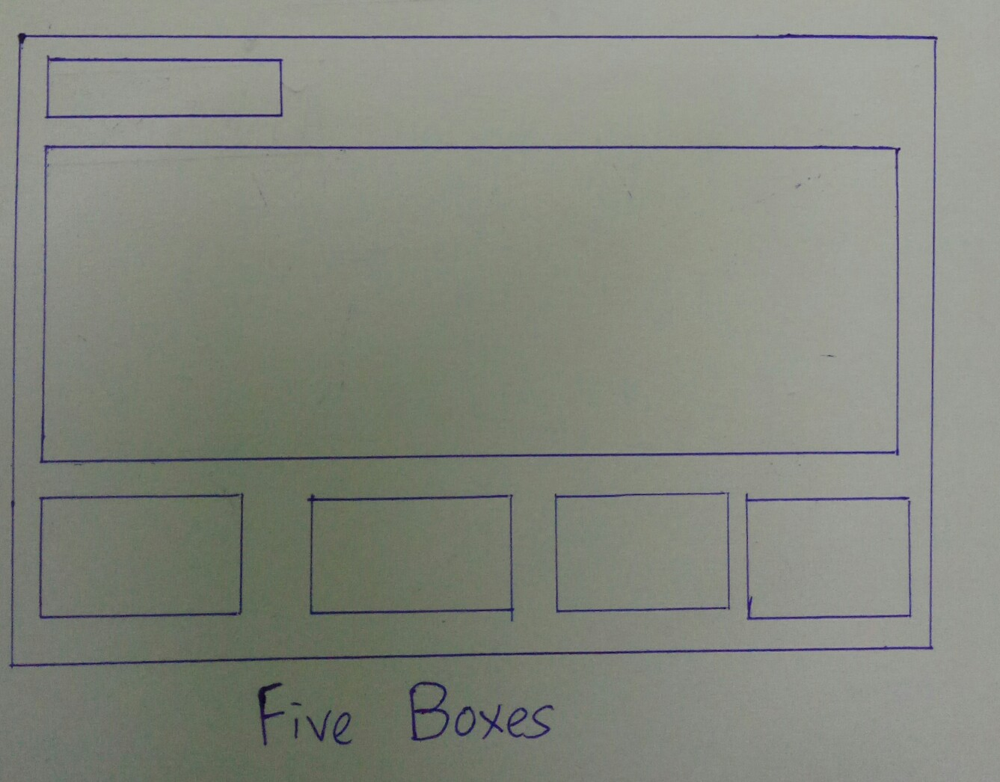
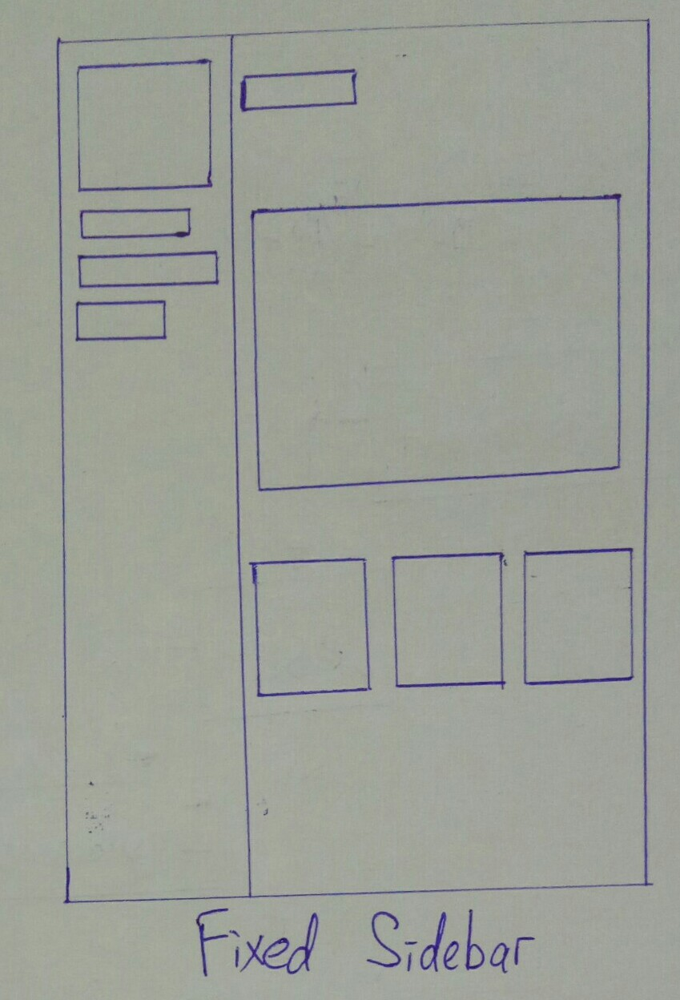
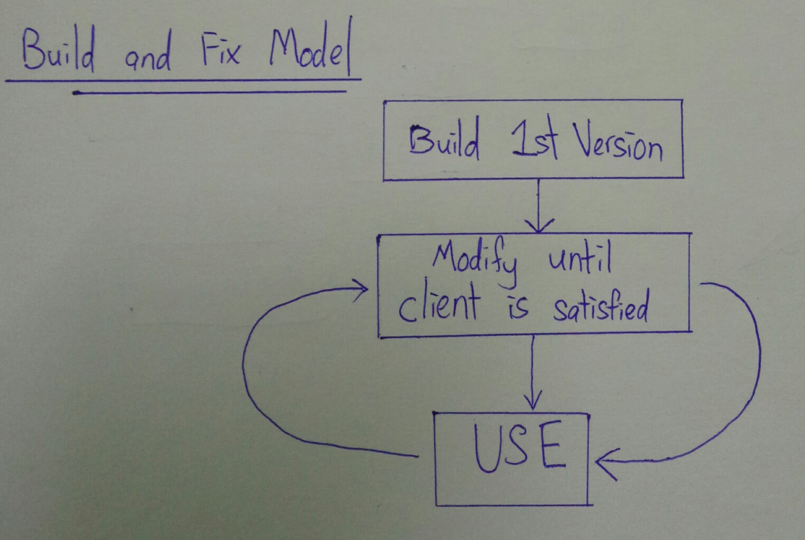
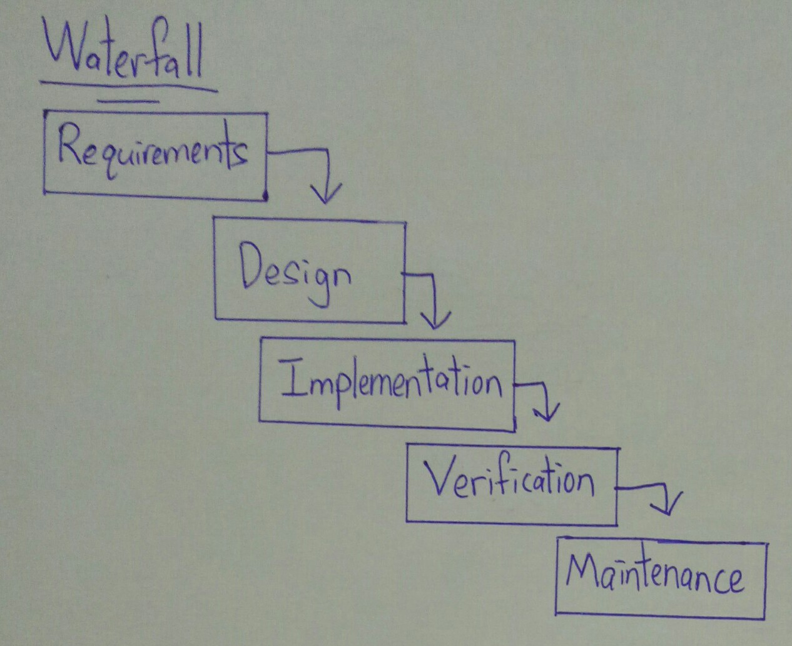

First, Blog like a personal diaries, user can put their artistic work on blog, to share with other people and express emotions.
Second, eCommerce websites belong websites of business, make users can shopping online, sellers and buyers not need to meet. Business can advertising on websites and increase reputation.
Target audience is a statistical result on users of website or product. Target audience is very important for the organization, can optimize product or websites and make easy and fun for users using. About some websites, target audience is important, for example comic, anime, novel and other, not every age people suitable or love.
House style like a format, for official document, product manual, project and others, will rules font color, font size, position of title and others. This is easy for handle more task on business, website or others.
Page layout styles have Advanced Grid, Five Box, Fixed Sidebar, this is normal will view on internet in our life. Different page layout styles will affect customer first impression of websites.
First,Advanced Grid is aligned layout, common use on sale boutique, because layout have more square and easy view at a glance. Second, Five Box easy show for customer, normal use in the restaurant industy, volunteer volunteer website and others, can make users have appetite or attention on some serious news. Last, have more sosial interner sites, will use fixed sidebar layout, because users can choose different page in fixed, and view status in a page.
  Development methodologies is a important part in software development. Development methodologies have Waterfall and Biuld and Fix Model.
Waterfall is a previously developed methods, advantages is have plan to promote project progress, in waterfall can know coding, design, testing in which stage. Disadvantages is all software development stage is fixed, cannot skip stage and need after complete software development to know result. Build and Fix Model is development a first generation project and after customer audit, after review and then modify the project to satify customer requirements. Advantages is poject progress no any rules, and as much as possible to satify customer requirements. Disadvantages of Build and Fix Model is no rules to plan project will affect software will make code messy cause difficulty in maintenance and increase risk.
 Used to establish well communication during requirement gathering phase is Git. Git is a version control system, it can make software developer easy to merge code with another software developer. Github is a platform about Git, software developers can interchange on Github and optimize code.